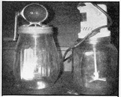

if you do get hold of a table separator, you'll need to bolt it down to a firm surface because the machine uses centrifugal force to spin the cream out of the milk. Mine is permanently fastened to the kitchen counter top.